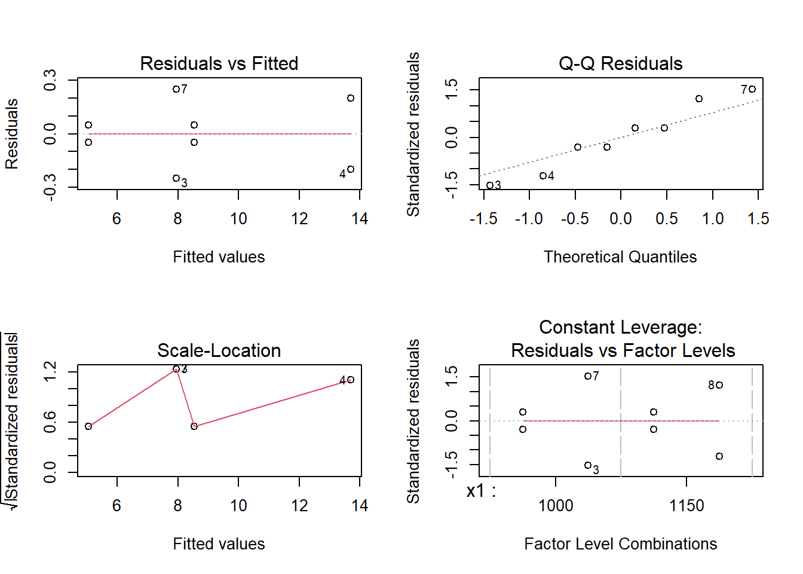
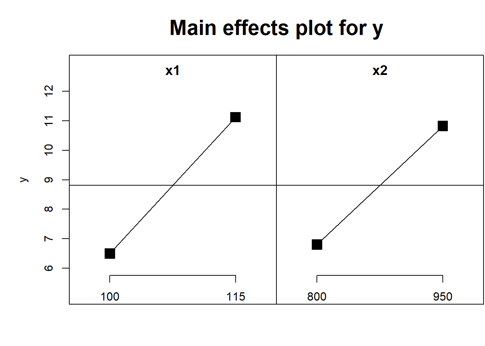
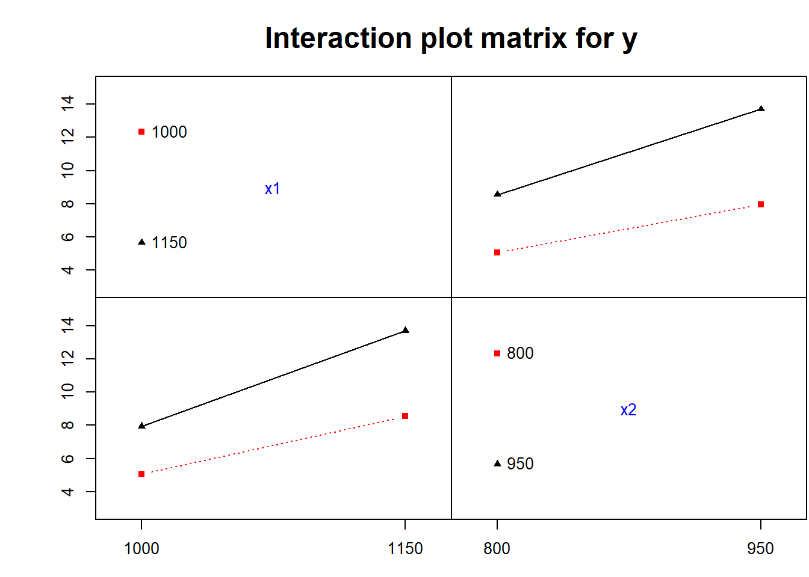
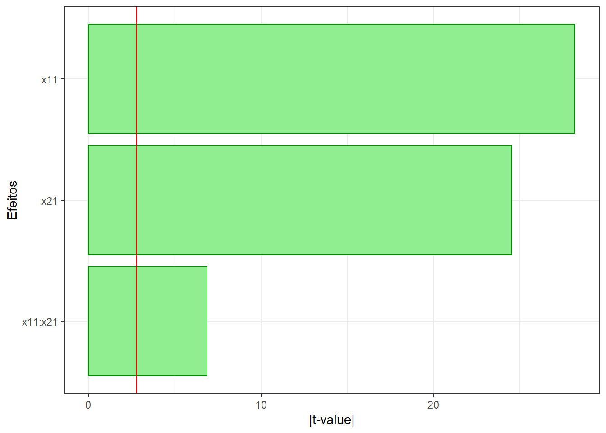
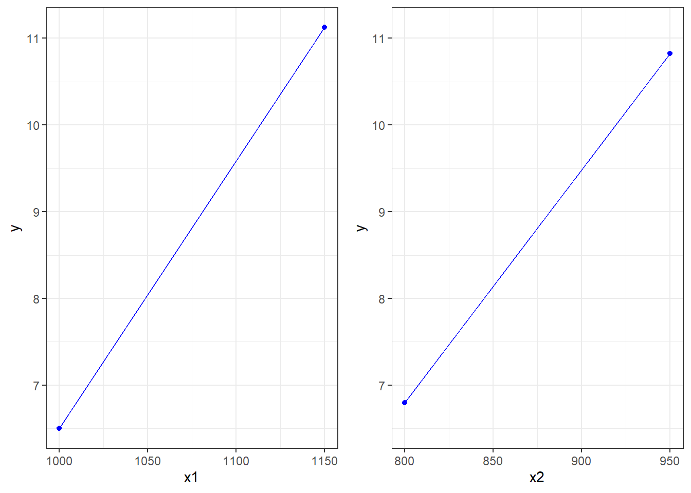
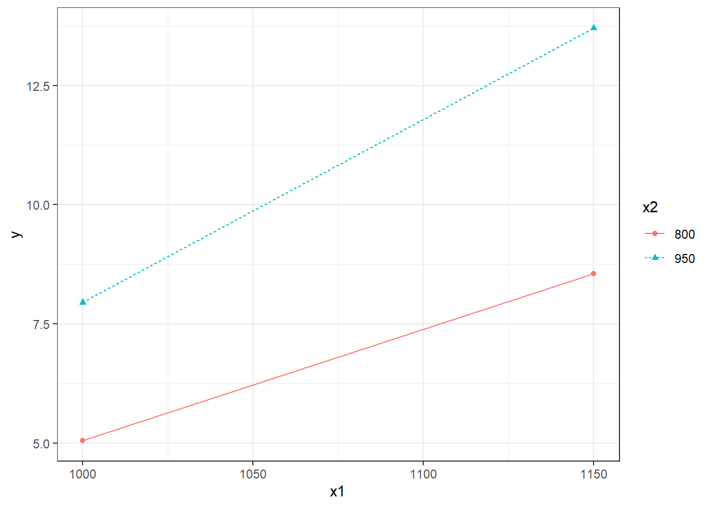
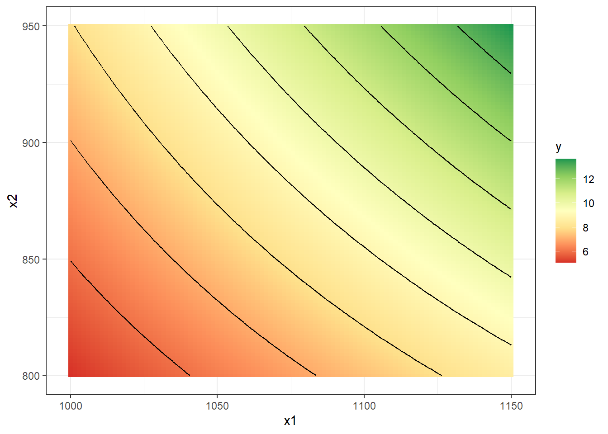

library(FrF2)
library(lmtest)
library(ggplot2)
library(ggpubr)
library(dplyr)Fatorial 2^k: Exemplo do fatorial 2^2 com n=2 réplicas
Carregando pacotes.
Planejamento
Planejamento fatorial \(2^2\) com duas réplicas. Processo de laminação, \(x_1\)=temperatura de desbaste, \(x_2\)=temperatura de acabamento.
plan <- FrF2(nruns = 4,
nfactors = 2,
replications = 2,
factor.names = list(x1 = c(1000,1150),
x2 = c(800, 950)),
randomize = F)Adicionando a resposta (y = tamanho de grão).
tgrao <- c(5.1, 8.6, 7.7, 13.5,
5.0, 8.5, 8.2, 13.9)
plan$y <- tgrao
summary(plan)Call:
FrF2(nruns = 4, nfactors = 2, replications = 2, factor.names = list(x1 = c(1000,
1150), x2 = c(800, 950)), randomize = F)
Experimental design of type full factorial
4 runs
each run independently conducted 2 times
Factor settings:
x1 x2
1 1000 800
2 1150 950
The design itself:
run.no run.no.std.rp x1 x2 Blocks y
1 1 1.1 1000 800 .1 5.1
2 2 2.1 1150 800 .1 8.6
3 3 3.1 1000 950 .1 7.7
4 4 4.1 1150 950 .1 13.5
5 5 1.2 1000 800 .2 5.0
6 6 2.2 1150 800 .2 8.5
7 7 3.2 1000 950 .2 8.2
8 8 4.2 1150 950 .2 13.9
class=design, type= full factorial
NOTE: columns run.no and run.no.std.rp are annotation,
not part of the data frameModelo de regressão e teste t
lm1 <- lm(y ~ x1*x2, data = plan)
summary(lm1)
Call:
lm.default(formula = y ~ x1 * x2, data = plan)
Residuals:
1 2 3 4 5 6 7 8
0.05 0.05 -0.25 -0.20 -0.05 -0.05 0.25 0.20
Coefficients:
Estimate Std. Error t value Pr(>|t|)
(Intercept) 8.81250 0.08197 107.511 4.49e-08 ***
x11 2.31250 0.08197 28.212 9.39e-06 ***
x21 2.01250 0.08197 24.552 1.63e-05 ***
x11:x21 0.56250 0.08197 6.862 0.00236 **
---
Signif. codes: 0 '***' 0.001 '**' 0.01 '*' 0.05 '.' 0.1 ' ' 1
Residual standard error: 0.2318 on 4 degrees of freedom
Multiple R-squared: 0.9972, Adjusted R-squared: 0.9952
F-statistic: 481.9 on 3 and 4 DF, p-value: 1.426e-05t crítico.
t_critico <- qt(0.025, df = df.residual(lm1),
lower.tail = F)
t_critico[1] 2.776445ANOVA.
# anova1 <- aov(lm1)
anova1 <- aov(y ~ x1*x2, data = plan)
summary(anova1) Df Sum Sq Mean Sq F value Pr(>F)
x1 1 42.78 42.78 795.93 9.39e-06 ***
x2 1 32.40 32.40 602.81 1.63e-05 ***
x1:x2 1 2.53 2.53 47.09 0.00236 **
Residuals 4 0.21 0.05
---
Signif. codes: 0 '***' 0.001 '**' 0.01 '*' 0.05 '.' 0.1 ' ' 1F crítico.
F_critico <- qf(0.05, df1=1, df2 = df.residual(lm1),
lower.tail = F)
F_critico[1] 7.708647Pressuposições
Normalidade dos resíduos.
shapiro.test(lm1$residuals)
Shapiro-Wilk normality test
data: lm1$residuals
W = 0.95114, p-value = 0.7227Gráficos de resíduos.
par(mfrow=c(2,2))
plot(lm1)
Homocedasticidade.
plan_ <- expand.grid(x1= c(-1,1),
x2= c(-1,1))
plan_ <- rbind(plan_,plan_)
plan_$x1x2 <- plan_$x1*plan_$x2
plan_$y <- tgrao
bartlett.test(y ~x1x2, plan_)
Bartlett test of homogeneity of variances
data: y by x1x2
Bartlett's K-squared = 9.402, df = 1, p-value = 0.002167Previsão usando o modelo de regressão
Valores previstos.
fitted.values(lm1) 1 2 3 4 5 6 7 8
5.05 8.55 7.95 13.70 5.05 8.55 7.95 13.70 Valor previsto para uma condição específica de interesse. Uma vez que foi utilizado o pacote FrF2 não é possível considerar níveis interemediários.
predict(lm1,
newdata = data.frame(x1 = "1150",
x2="800")) 1
8.55 Planejamento decodificado via expand.grid.
plan2 <- expand.grid(x1= c(1000,1150),
x2= c(800,950))
plan2 <- rbind(plan2,plan2)
plan2$y <- tgraoModelo decodificado. Observção: Não fazer inferência (teste t via summary) com o modelo decdificado.
lm1_decod <- lm(y ~ x1*x2, plan2)
lm1_decod
Call:
lm.default(formula = y ~ x1 * x2, data = plan2)
Coefficients:
(Intercept) x1 x2 x1:x2
46.25000 -0.05667 -0.08067 0.00010 Previsao em níveis intermediários.
predict(lm1_decod,
newdata = data.frame(x1 = 1125,
x2=875)) 1
10.35417 Gráficos
Do pacote FrF2 (Não recomendado).
MEPlot(lm1)
IAPlot(lm1)
Gráfico de Pareto dos efeitos padronizados.
t_0 <- summary(lm1)[["coefficients"]][,"t value"]
t_0 <- abs(t_0)
ttest <- data.frame(t0 = t_0,
efeitos = names(t_0))
pPar <- ggplot(ttest[-1,],
aes(x= reorder(efeitos, t0),
y= t0)) +
geom_bar(stat = "identity",
fill = "lightgreen", color="green4") +
geom_hline(yintercept = t_critico, color = "red") +
coord_flip() +
theme_bw() +
labs(x="Efeitos", y="|t-value|")
pPar
Gráficos de efeitos.
mean_x1 <- plan2 |>
group_by(x1) |>
summarise(y=mean(y))
mean_x2 <- plan2 |>
group_by(x2) |>
summarise(y=mean(y))
lims_x1x2 <- c(min(mean_x1$y,mean_x2$y),
max(mean_x1$y,mean_x2$y))p1 <- ggplot(mean_x1,
aes(x=x1,y=y)) +
geom_point(col="blue") +
geom_line(col="blue") +
ylim(lims_x1x2) +
theme_bw()p2 <- ggplot(mean_x2,
aes(x=x2,y=y)) +
geom_point(col="blue") +
geom_line(col="blue") +
ylim(lims_x1x2) +
theme_bw()ggarrange(p1,p2)
Gráfico de interação.
meanx1x2 <- plan2 |>
group_by(x1,x2) |>
summarise(y=mean(y))p12 <- ggplot(meanx1x2,
aes(x=x1,y=y,
color=factor(x2),
lty=factor(x2),
pch=factor(x2),
group = x2)) +
geom_point() +
geom_line() +
theme_bw() +
labs(color="x2",lty="x2",pch="x2")
p12
Gráfico de contorno.
x_grid <- expand.grid(
x1= seq(1000,1150,length=100),
x2= seq(800, 950, length=100)
)
y_pred <- predict(lm1_decod,
newdata=x_grid)
dados <- cbind(x_grid, y = y_pred)p_cont <- ggplot(dados,
aes(x=x1,y=x2,
z=y,fill=y)) +
geom_tile() +
geom_contour(color="black") +
scale_fill_distiller(palette = "RdYlGn",
direction=1) +
theme_bw()
p_cont